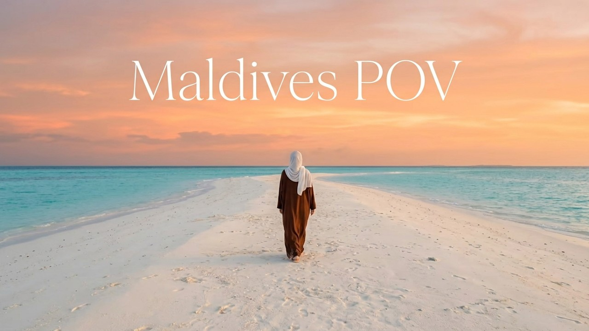

Maldives · travel diary 01
01 / FIRST DIARY
The most peaceful Maldives trip in my 20s
Come along to Fuvahmulah for warm sunsets, palm-lined paths, white sand beaches and the calm little moments that make a journey feel like home.
- Cozy villa tour
- Scuba diving with tiger sharks
- Island sunsets & reflections
- Mini Q&A